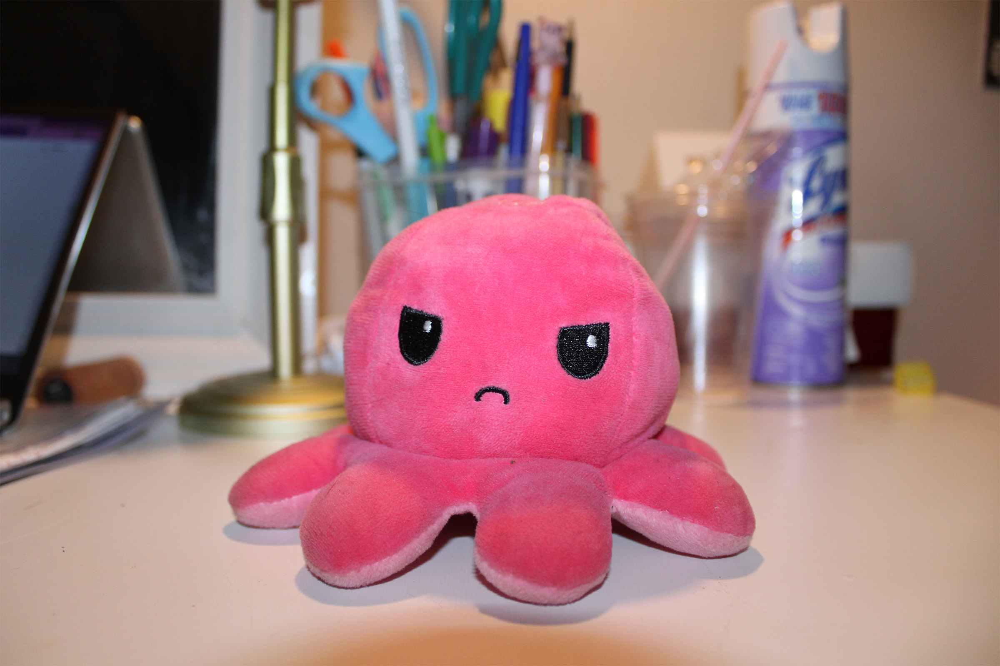

This page shows the original image and the edited image using Photoshop's Field Blur tool.

In this exercise, I used Photoshop’s Field Blur tool to simulate depth of field. By adding blur selectively, I was able to control where the viewer looks in the image. This showed me how editing tools can recreate camera effects and enhance focus even after the photo is taken.